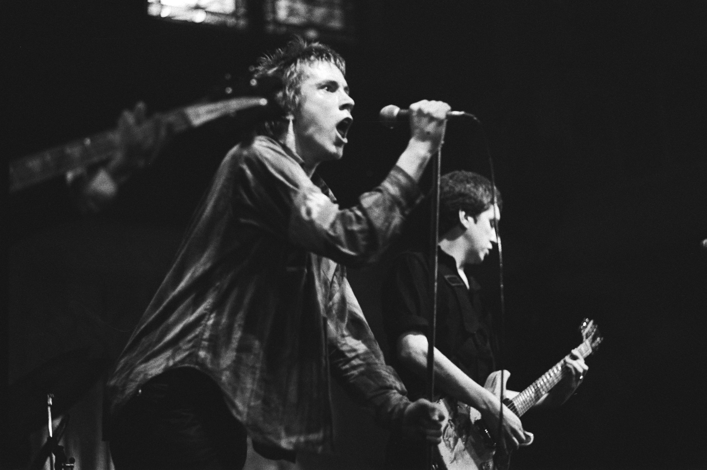
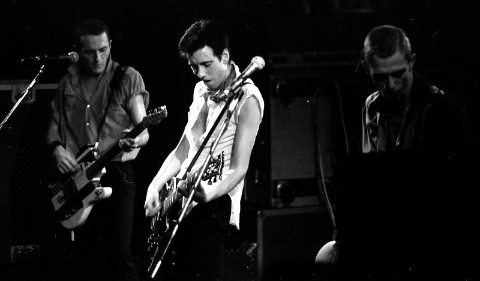

Punk rock (or simply punk) is a music genre that emerged in the mid-1970s. Rooted in 1960s garage rock, punk bands rejected the perceived excesses of mainstream 1970s rock. They typically produced short, fast-paced songs with hard-edged melodies and singing styles, stripped-down instrumentation, and often shouted political, anti-establishment lyrics. Punk embraces a DIY ethic; many bands self-produce recordings and distribute them through independent record labels.
The first wave of punk rock was "aggressively modern" and differed from what came before. According to Ramones drummer Tommy Ramone, "In its initial form, a lot of stuff was innovative and exciting. Unfortunately, what happens is that people who could not hold a candle to the likes of Hendrix started noodling away. Soon you had endless solos that went nowhere. By 1973, I knew that what was needed was some pure, stripped down, no bullshit rock 'n' roll." John Holmstrom, founding editor of Punk magazine, recalls feeling "punk rock had to come along because the rock scene had become so tame that like Billy Joel and Simon and Garfunkel were being called rock and roll, when to me and other fans, rock and roll meant this wild and rebellious music." According to Robert Christgau, punk "scornfully rejected the political idealism and Californian flower-power silliness of hippie myth."
Technical accessibility and a do it yourself (DIY) spirit are prized in punk rock. UK pub rock from 1972 to 1975 contributed to the emergence of punk rock by developing a network of small venues, such as pubs, where non-mainstream bands could play. Pub rock also introduced the idea of independent record labels, such as Stiff Records, which put out basic, low-cost records. Pub rock bands organized their own small venue tours and put out small pressings of their records. In the early days of punk rock, this DIY ethic stood in marked contrast to what those in the scene regarded as the ostentatious musical effects and technological demands of many mainstream rock bands. Musical virtuosity was often looked on with suspicion. According to Holmstrom, punk rock was "rock and roll by people who didn't have very many skills as musicians but still felt the need to express themselves through music". In December 1976, the English fanzine Sideburns published a now-famous illustration of three chords, captioned "This is a chord, this is another, this is a third. Now form a band".
British punk rejected contemporary mainstream rock, the broader culture it represented, and their music predecessors: "No Elvis, Beatles or the Rolling Stones in 1977", declared the Clash song "1977". 1976, when the punk revolution began in Britain, became a musical and a cultural "Year Zero". As nostalgia was discarded, many in the scene adopted a nihilistic attitude summed up by the Sex Pistols slogan "No Future"; in the later words of one observer, amid the unemployment and social unrest in 1977, "punk's nihilistic swagger was the most thrilling thing in England." While "self-imposed alienation" was common among "drunk punks" and "gutter punks", there was always a tension between their nihilistic outlook and the "radical leftist utopianism" of bands such as Crass, who found positive, liberating meaning in the movement. As a Clash associate describes singer Joe Strummer's outlook, "Punk rock is meant to be our freedom. We're meant to be able to do what we want to do."
Authenticity has always been important in the punk subculture—the pejorative term "poseur" is applied to those who adopt its stylistic attributes but do not to share or understand its underlying values and philosophy. Scholar Daniel S. Traber argues that "attaining authenticity in the punk identity can be difficult"; as the punk scene matured, he observes, eventually "everyone got called a poseur".
Vocalist Johnny Rotten and guitarist Steve Jones of the Sex Pistols
The early punk bands emulated the minimal musical arrangements of 1960s garage rock. Typical punk rock instrumentation is stripped down to one or two guitars, bass, drums and vocals. Songs tend to be shorter than those of other rock genres, and played at fast tempos. Most early punk rock songs retained a traditional rock 'n' roll verse-chorus form and 4/4 time signature. However, later bands have often broken from this format. In critic Steven Blush's description, "The Sex Pistols were still rock'n'roll ... like the craziest version of Chuck Berry. Hardcore was a radical departure from that. It wasn't verse-chorus rock. It dispelled any notion of what songwriting is supposed to be. It's its own form."
The vocals are sometimes nasal, and the lyrics are often shouted in an "arrogant snarl", rather than sung in the conventional sense. Complicated guitar solos were considered self-indulgent, although basic guitar breaks were common. Guitar parts tend to include highly distorted power chords or barre chords, creating a characteristic sound described by Christgau as a "buzzsaw drone". Some punk rock bands take a surf rock approach with a lighter, twangier guitar tone. Others, such as Robert Quine, lead guitarist of the Voidoids, have employed a wild, "gonzo" attack, a style that stretches back through the Velvet Underground to the 1950s' recordings of Ike Turner. Bass guitar lines are often uncomplicated; the quintessential approach is a relentless, repetitive "forced rhythm", although some punk rock bass players—such as Mike Watt of the Minutemen and Firehose—emphasize more technical bass lines. Bassists often use a pick due to the rapid succession of notes, which makes fingerpicking impractical. Drums typically sound heavy and dry, and often have a minimal set-up. Compared to other forms of rock, syncopation is much less the rule. Hardcore drumming tends to be especially fast. Production tends to be minimalistic, with tracks sometimes laid down on home tape recorders or simple four-track portastudios.
Punk rock lyrics are typically frank and confrontational; compared to the lyrics of other popular music genres, they frequently comment on social and political issues. Trend-setting songs such as the Clash's "Career Opportunities" and Chelsea's "Right to Work" deal with unemployment and the grim realities of urban life. Especially in early British punk, a central goal was to outrage and shock the mainstream. The Sex Pistols' "Anarchy in the U.K." and "God Save the Queen" openly disparaged the British political system and social mores. Anti-sentimental depictions of relationships and sex are common, as in "Love Comes in Spurts", recorded by the Voidoids. Anomie, variously expressed in the poetic terms of Hell's "Blank Generation" and the bluntness of the Ramones' "Now I Wanna Sniff Some Glue", is a common theme. The controversial content of punk lyrics led to some punk records being banned by radio stations and refused shelf space in major chain stores. Christgau said that "Punk is so tied up with the disillusions of growing up that punks do often age poorly."
The classic punk rock look among male American musicians harkens back to the T-shirt, motorcycle jacket, and jeans ensemble favored by American greasers of the 1950s associated with the rockabilly scene and by British rockers of the 1960s. In addition to the T-shirt, and leather jackets they wore ripped jeans and boots, typically Doc Martens. The punk look was inspired to shock people. Richard Hell's more androgynous, ragamuffin look—and reputed invention of the safety-pin aesthetic—was a major influence on Sex Pistols impresario Malcolm McLaren and, in turn, British punk style. (John D Morton of Cleveland's Electric Eels may have been the first rock musician to wear a safety-pin-covered jacket.) McLaren's partner, fashion designer Vivienne Westwood, credits Johnny Rotten as the first British punk to rip his shirt, and Sex Pistols bassist Sid Vicious as the first to use safety pins, although few of those following punk could afford to buy McLaren and Westwood's designs so famously worn by the Pistols, so they made their own, diversifying the 'look' with various different styles based on these designs. Young women in punk demolished the typical female types in rock of either "coy sex kittens or wronged blues belters" in their fashion. Early female punk musicians displayed styles ranging from Siouxsie Sioux's bondage gear to Patti Smith's "straight-from-the-gutter androgyny". The former proved much more influential on female fan styles. Over time, tattoos, piercings, and metal-studded and -spiked accessories became increasingly common elements of punk fashion among both musicians and fans, a "style of adornment calculated to disturb and outrage". Among the other facets of the punk rock scene, a punk's hair is an important way of showing their freedom of expression. The typical male punk haircut was originally short and choppy; the mohawk later emerged as a characteristic style. Along with the mohawk, long spikes have been associated with the punk rock genre.
The Clash, performing in 1980